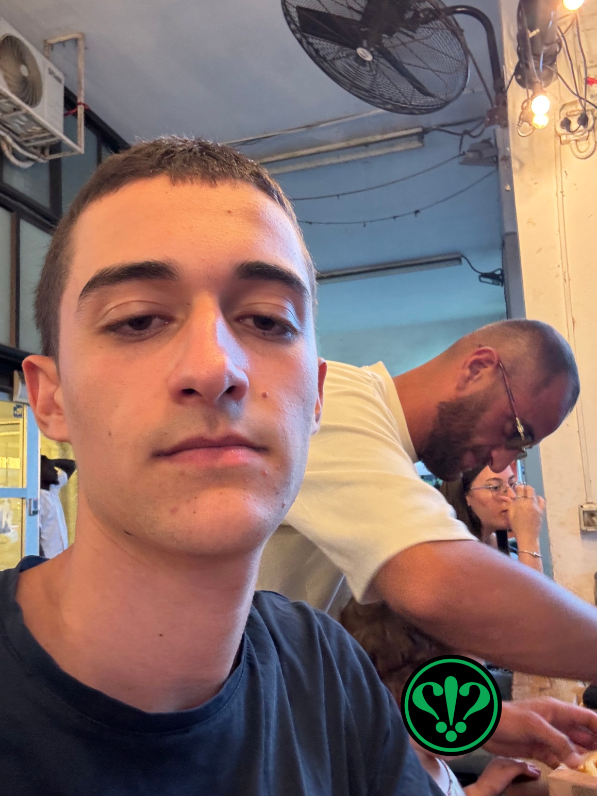

ברגע זה התחילה הדרמה של הערב, אלון ולירון משלישיית הנחפמים האגדית הצטרפו, מה שעורר את זעמם של העוקבים בתור.
הם טענו שכל אדם שמעוניין להזמין חייב לעמוד בתור לבדו, ושלא יקום ולא יהיה בישראל תור ישראלי!
אור ושחר חשבו מיד על רעיון יצירתי של להזמין לאלון ולירון בהזמנה משותפת איתם.
אך אבוי! בבוא איתי להזמין לו וללב, התרעם מר נהוראי1 ושאל אותו מה הוא חושב שהוא עושה. איתי באופן טריוויאלי ענה שהוא מזמין המבורגר שכן מה עוד יש לעשות מול עמדת הזמנת המבורגרים. תשובה זו לא מצאה חן בעיני מר נהוראי1 שהחליט להסיט בחוזקה עם ידו את איתי מעמדת ההזמנה. איתי ואור לא ערערו על החלטה זו היות שלאדון הייתה נוכחות פיזית בלתי מבוטלת. בדקנו עם מר נהוראי2 שהיה בדיוק מאחורי נהוראי1 בתור אם נוכל להיכנס מלפניו, במקום שהובטח לנו לפני 3000 שנה; מר נהוראי2 סירב בתקיפות לבקשה מה שהוביל לתחילתו של ויכוח בינו לבין אור ואיתי על האם נכון כאשר מזמינים בקבוצה להזמין כולם בהזמנה אחת או שנציג מהקבוצה יעמוד בתור, וכל אחד יתחלף איתו כשיסיים להזמין.

איתי תפס את מר נהוראי1 במצלמתו, עם סיפור כיסוי של סלפי תמים במיוחד.
בשלב זה מצאו את עצמם שני הגיבורים שלנו מחוץ לתור חסרי כל תקווה, רוב החבורה כבר הזמינה את ההמבורגרים שלה, ולחזור לסוף התור יעלה לאיתי וללב בארוחה מפוצלת לחלוטין משאר החבורה, מה שעלול להרוס את הערב כליל.